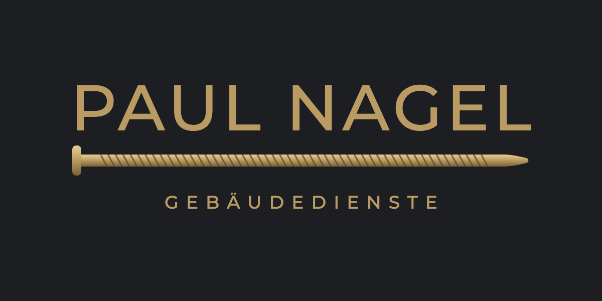
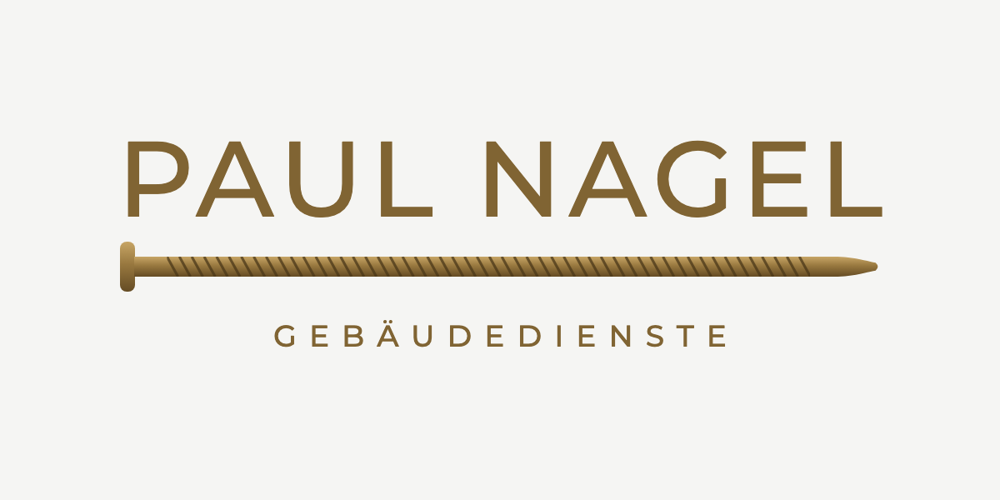
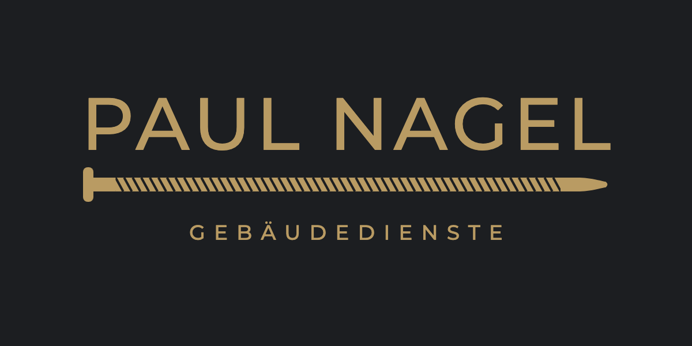
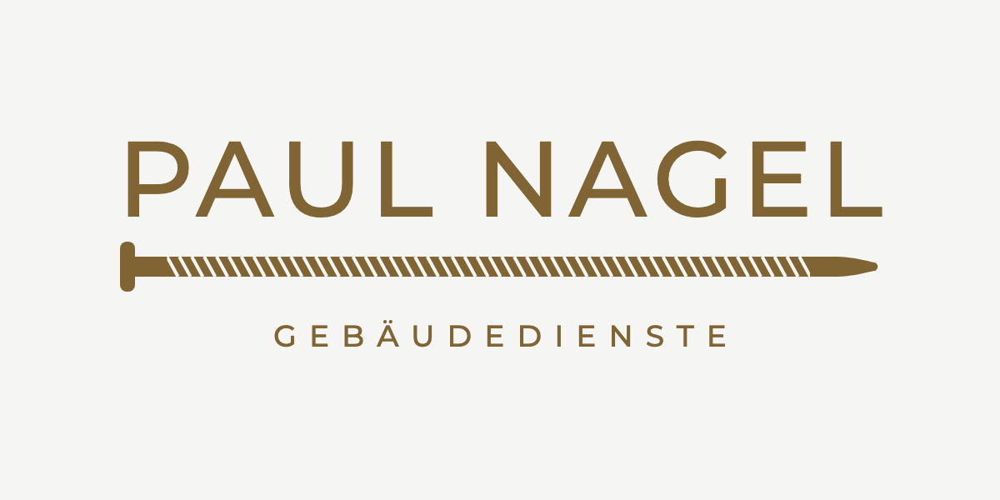

Paul Nagel · Logo mit Gewinde-Nagel
Nach deiner Vorlage. Jede Version in zwei Fassungen, passend zur Website.
Dunkel · Renovierung & InnenausbauHell · Gebäudereinigung
1


Quer, mit Glanz. Hauptlogo für Website-Kopf, E-Mail, Briefpapier. Gold mit leichtem Metallverlauf.
2


Quer, einfarbig. Gleiches Logo ohne Verlauf. Für Stick auf Kleidung, Folie auf dem Auto, Stempel.
3
Gestapelt und Zeichen. Gestapelt für quadratische Flächen (Social Media, Jackenrücken). Der Nagel allein als Favicon und Profilbild.